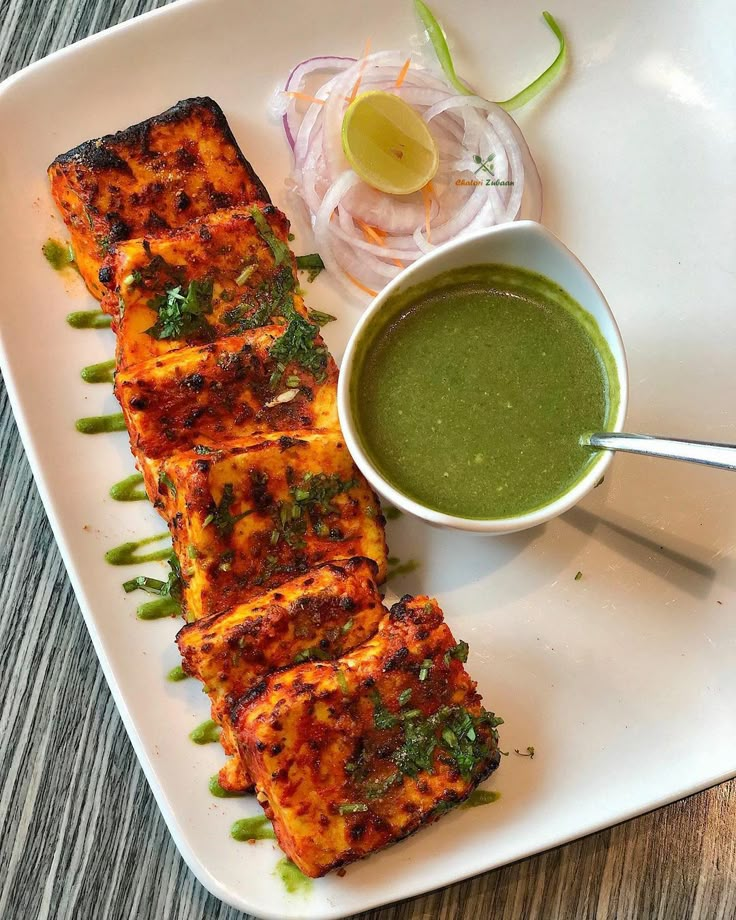

Paneer Tikka

A delicious Indian dish made with grilled cottage cheese cubes marinated in spices.
Ingredients
- 250g paneer, cubed
- 1 cup yogurt
- 2 cloves garlic, minced
- 1 inch ginger, minced
- 2 tbsp lemon juice
- 1 tsp cumin powder
- 1 tsp coriander powder
- 1/2 tsp red chili powder
- Salt to taste
Steps
- Cube the paneer and set aside.
- Mix yogurt, garlic, ginger, lemon juice, and all the spices to create the marinade.
- Marinate the paneer cubes in the mixture for at least 30 minutes.
- Preheat the grill or skillet and cook the paneer until golden brown.
Home